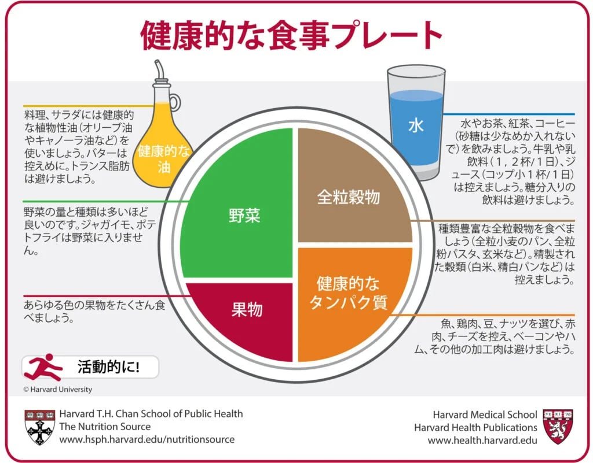
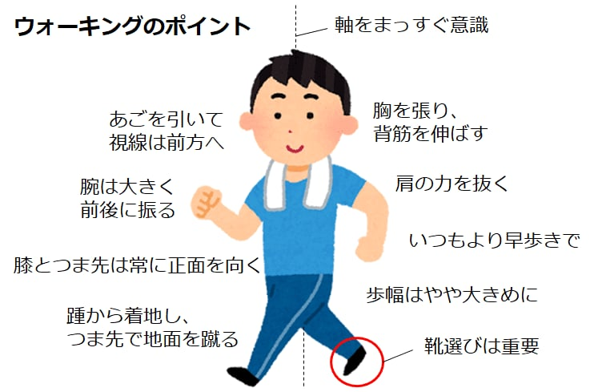
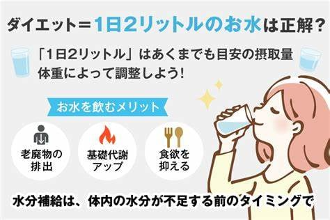

健康的な体重のガイドラインは人口レベルで策定されていますが、各人の健康的な体重の範囲は異なり、年齢、性別、遺伝、体格、既存の病歴、生活習慣、若い成人としての体重などの要因によって異なります。体重は、健康を決定する多くの要因の 1 つにすぎません。身長に対して標準化された体重を測定するボディマス指数 (BMI) は、健康リスクの指標としてよく使用されます。体脂肪や体組成を直接測定するものではありませんが、研究では、BMI は体脂肪を直接測定する他の方法と密接に相関していることが示されています。MET Life 身長体重表はどの程度役立ちますか？体重増加の原因は、特定の薬剤 (コルチコステロイド、抗うつ薬、ベータ遮断薬、抗精神病薬、インスリン)、妊娠、慢性的なストレス、慢性的な睡眠不足、過剰なカロリー摂取、十分な運動不足など、数多くあります。 できる限り安定した体重を維持し、健康リスクと強く関連する過度の体重増加をコントロールすることが有益です。 維持して、増やさない健康的な体重を維持することで、心臓病、脳卒中、糖尿病、高血圧、および多くの異なる癌のリスクを軽減できます。 体重、ウエストサイズ、および20代半ば以降に増加した体重の量は、健康に影響を与える可能性があります。これらの要因は、次の病気や症状を発症する可能性に強く影響する可能性があります。 心臓発作や脳卒中を含む心血管疾患 糖尿病 癌 関節炎 胆石 喘息 白内障 不妊症 いびき 睡眠時無呼吸症 ほとんどの成人は、平均して毎年1～2ポンド体重が増えます。 加齢とともに体重が増えると、1つまたは複数の慢性疾患を発症する可能性が高くなります。看護師健康調査と医療専門家追跡調査では、20歳以降に体重が11～22ポンド増加した中年女性と男性は、5ポンド以下しか増加しなかった人に比べて、心臓病、高血圧、2型糖尿病、胆石を発症する可能性が最大で3倍高かった。22ポンド以上体重が増えた人は、これらの病気を発症するリスクがさらに高かった。看護師健康調査データの別の分析では、成人の体重増加は閉経後でも閉経後乳がんのリスクを高める可能性があることが判明した 心強いことに、ホルモン補充療法を使用したことのない女性の場合、閉経後に体重を減らし、それを維持することで、閉経後乳がんのリスクが半分に減った。
もっと 美しくなる ヒント
-

食事バランス
-

1日1万歩
-

１日2L水
×